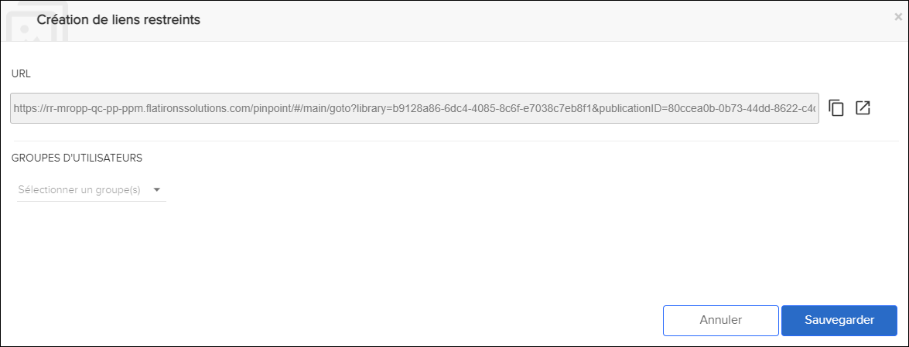

Non applicable pour Pinpoint Standalone/Pinpoint Standalone Light.
Un utilisateur administrateur peut créer des liens
restreints pour S1000D (modules de données) ou iSpec2200 (tâches) et attribuer les
liens à des groupes d'utilisateurs. L'utilisateur administrateur doit disposer des
autorisations pour le privilège Can create or remove restricted links. Cette
fonctionnalité est disponible pour Pinpoint Server et Pinpoint Server Light. Les
utilisateurs disposant du privilège Can view the content of restricted links
peuvent afficher les liens. Reportez-vous au Flatirons Access Control Manager
User Guide pour plus de détails sur les autorisations.
Pour
créer un lien restreint, procédez comme suit :Remarque : Le contenu
doit être publié avant que vous puissiez créer un lien restreint.
-
Sélectionnez l'icône
 Création de liens restreints ians l'en-tête du volet
Contenu.
La boîte de dialogue Création de liens restreints s'affiche, par exemple :
Création de liens restreints ians l'en-tête du volet
Contenu.
La boîte de dialogue Création de liens restreints s'affiche, par exemple :
-
Cliquez sur Sauvegarder.
Après avoir enregistré le lien restreint. un utilisateur administrateur a ces options :
- Cliquez sur l'icône
 Copier pour copier et envoyer le lien restrictif
aux utilisateurs autorisés à afficher le lien.
Copier pour copier et envoyer le lien restrictif
aux utilisateurs autorisés à afficher le lien. - Cliquez sur l'icône
 Ouvrir dans un nouvel onglet pour afficher le
lien restreint dans un nouvel onglet.
Ouvrir dans un nouvel onglet pour afficher le
lien restreint dans un nouvel onglet.
Un utilisateur administrateur peut gérer les liens restreints en sélectionnant l'icône
 Gérer liens restreintsdans la Barre
d’action.Reportez-vous à Gérer les liens restreints.
Gérer liens restreintsdans la Barre
d’action.Reportez-vous à Gérer les liens restreints. - Cliquez sur l'icône